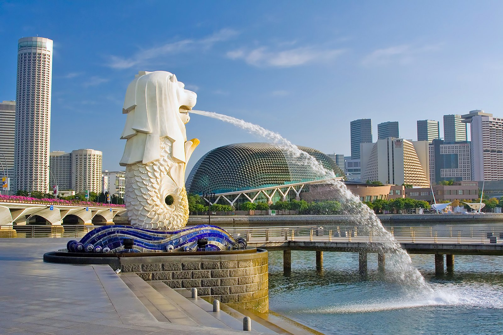
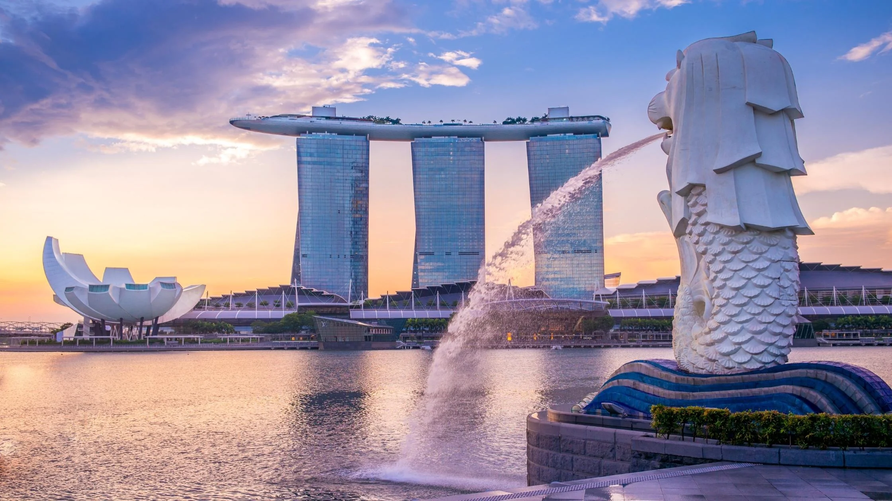
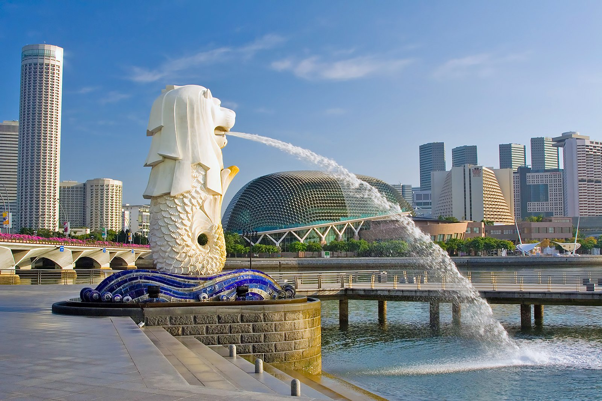
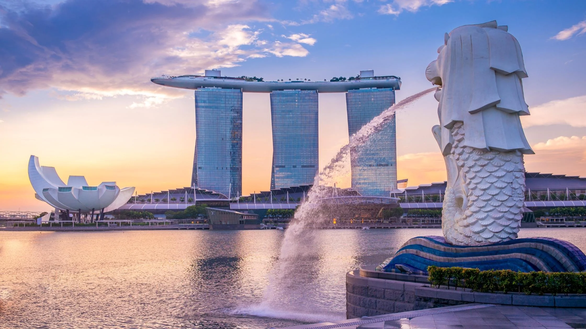
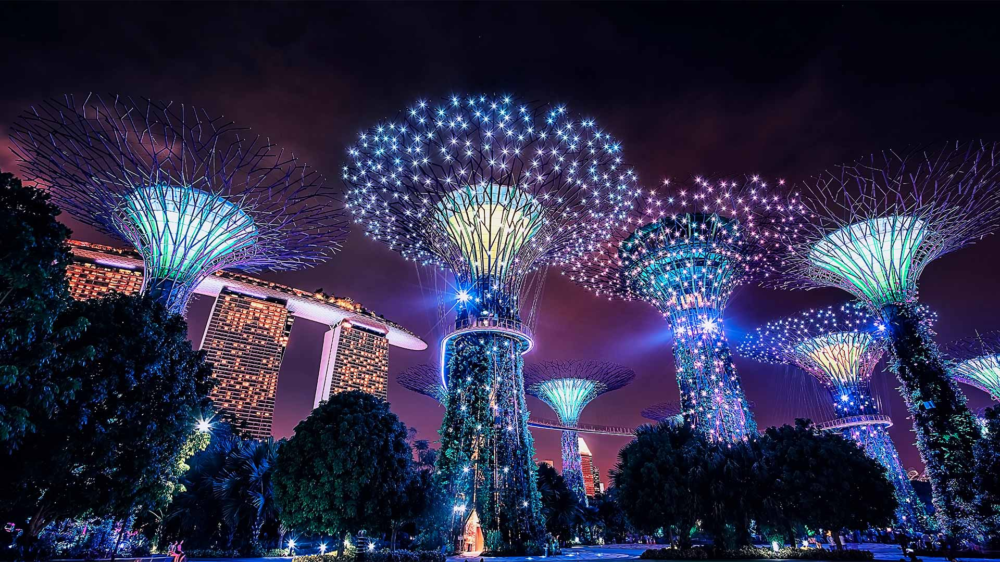
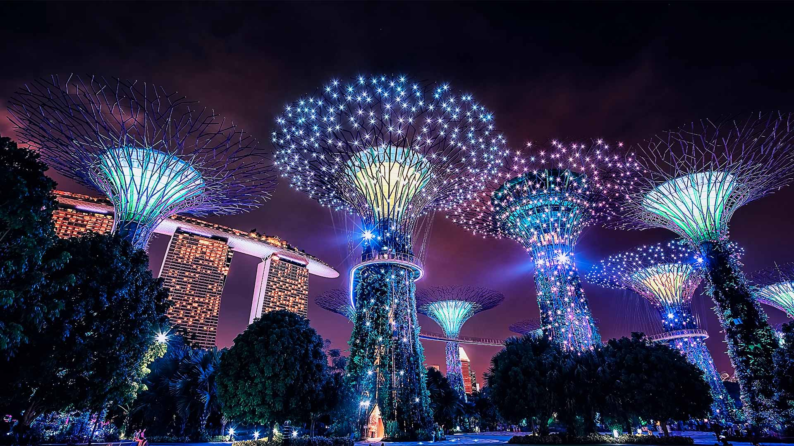

Singapore is known for its efficient transportation system, with an extensive network of buses and the world-renowned Mass Rapid Transit (MRT) system, facilitating easy travel around the city. Renowned for its cleanliness and safety, Singapore boasts strict regulations and enforcement to maintain its pristine environment and low crime rates. Cultural diversity thrives in Singapore, with a harmonious blend of Chinese, Malay, Indian, and various other ethnic groups, evident in its cuisine, festivals, and cultural attractions. Iconic landmarks such as Gardens by the Bay, featuring stunning Supertree structures and lush greenery, and Marina Bay Sands, with its distinctive architecture and vibrant entertainment options, showcase Singapore's modern and innovative spirit, attracting visitors from around the world.
Merlion Park, nestled along the waterfront in Singapore, had always intrigued me with its iconic symbol - the majestic Merlion statue. The idea of a half-lion, half-fish creature guarding the city seemed like something out of a mythological tale, and I was eager to witness it in person. But Merlion Park offered more than a cool statue. It was a portal to Singapore's history. Standing there, I could almost hear the whispers of the past – the village transformed into a bustling city-state. The Merlion, with its fish tail, was a reminder of those humble beginnings, a fishing village where Singapore's story began.
Marina Bay Sands, with its striking architecture and world-renowned status, beckoned to me like a beacon of luxury and excitement amidst the vibrant cityscape of Singapore. As I approached this iconic landmark, I couldn't help but marvel at its towering silhouette, seemingly reaching for the sky. But Marina Bay Sands wasn't just about the view. The whole place pulsed with a vibrant energy. I pictured myself wandering through the casino, the clinking of chips and the thrill of the games a constant hum in the background. Or maybe catching a world-class performance at the theatre, the energy of the crowd electric. This wasn't just a hotel, it was a hive of activity, a place where anything seemed possible.
Gardens by the Bay, a lush oasis nestled in the heart of Singapore, had long been on my list of must-visit destinations. With its futuristic Supertree Grove and stunning botanical gardens, it promised a captivating blend of nature and innovation unlike anything I had ever seen. Gardens by the Bay wasn't just a tourist attraction; it was an invitation to explore. It was a chance to wander through otherworldly landscapes, to marvel at nature's diversity, and to connect with the cultural heart of Singapore. In those gardens, the world bloomed in a kaleidoscope of colors and experiences, and I couldn't wait to be a part of it.
 



 
